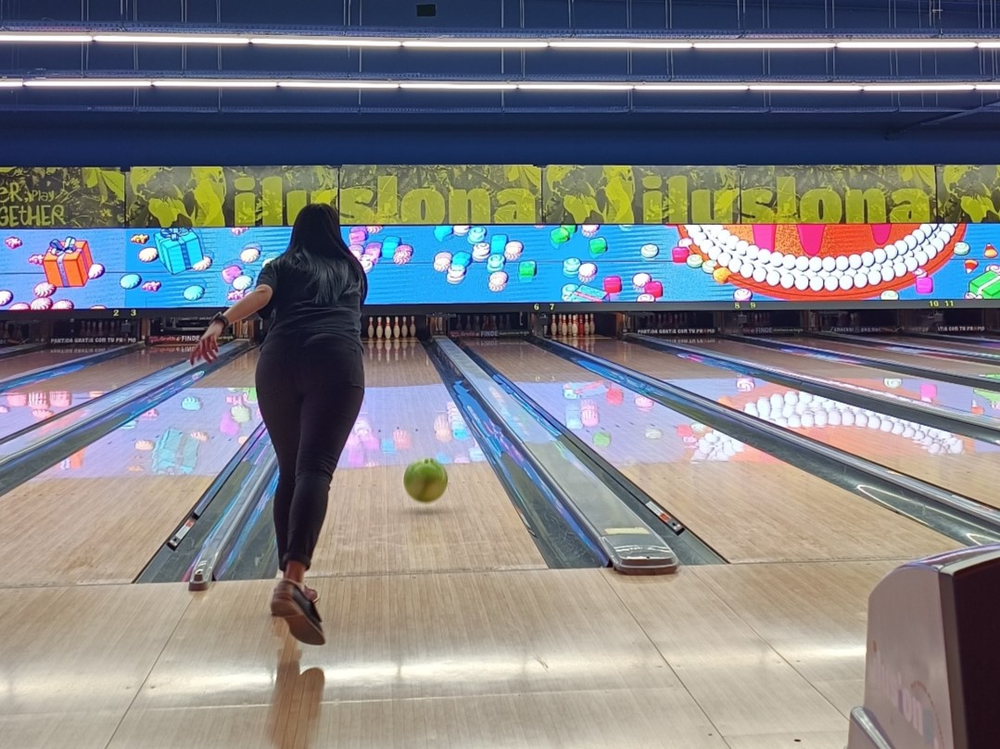
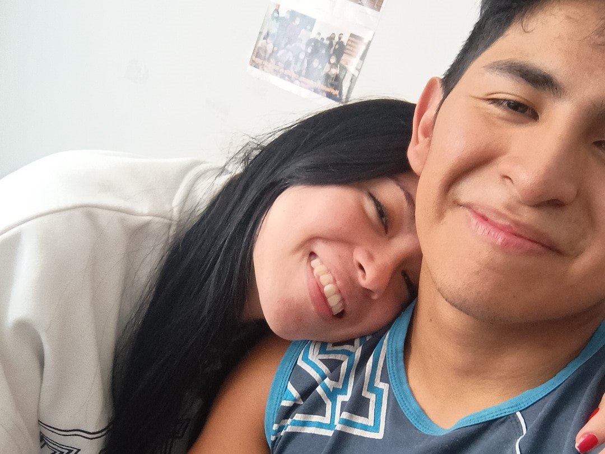
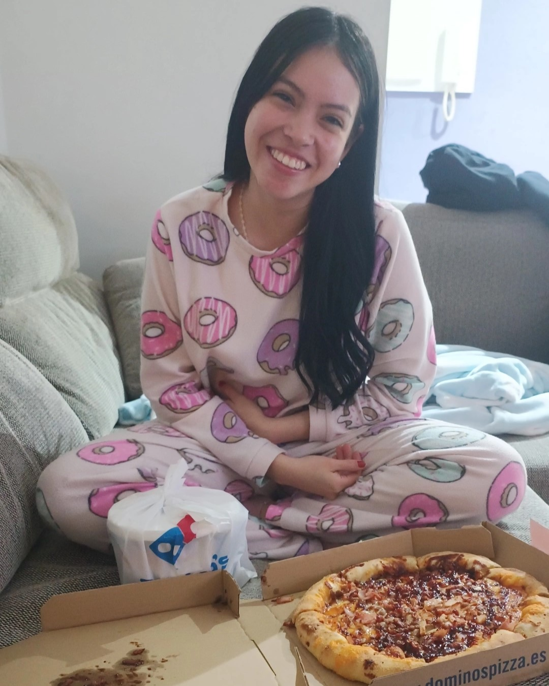
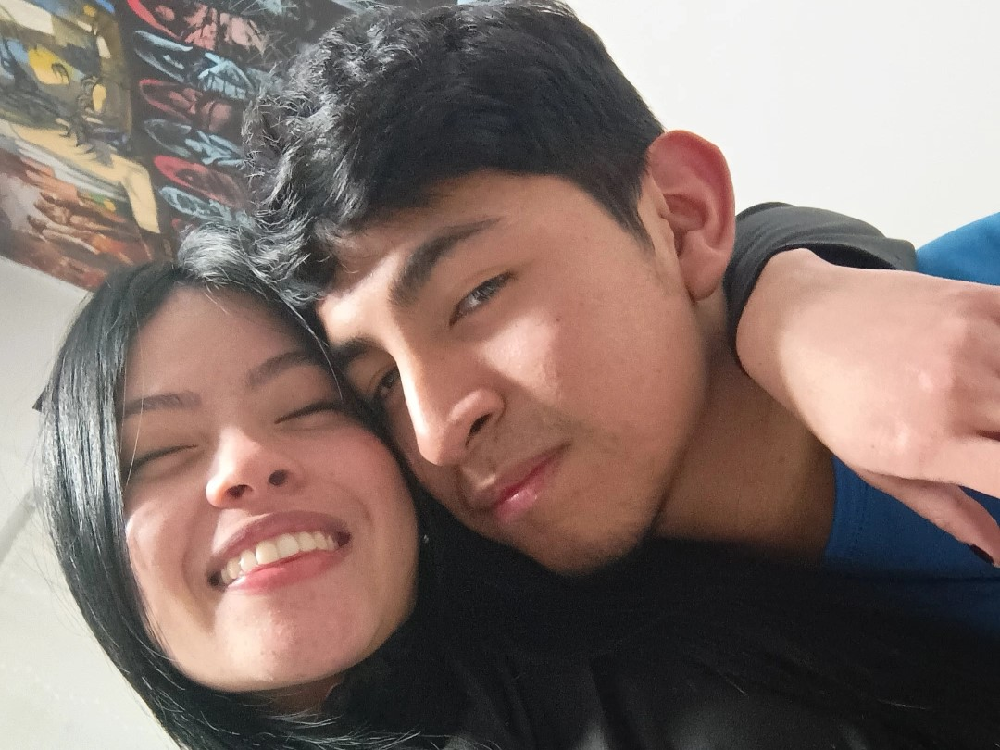
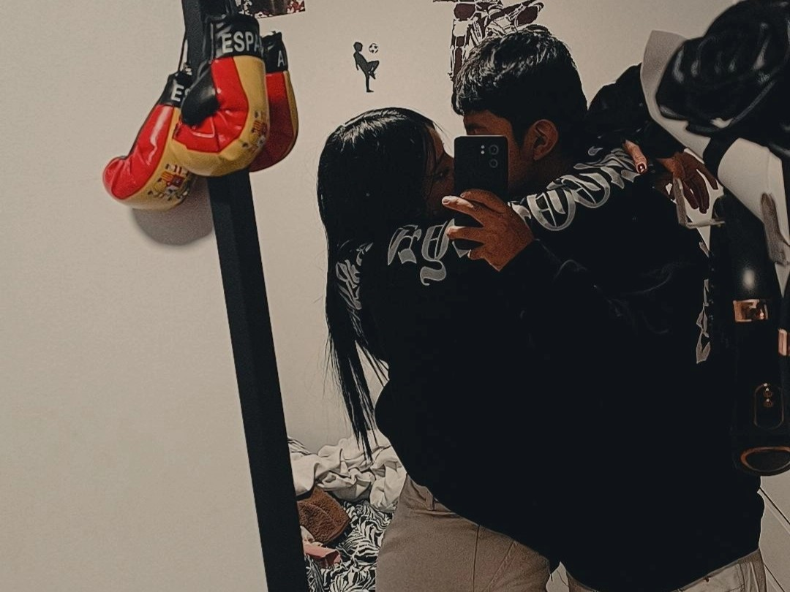

Quizás sea la única foto que tenga de ese día, pero no me hace falta ninguna foto para
acordarme con detalle lo que ocurrio aquel día porque fue el día que nos conocimos,
el día que empezo todo, nuestra primera cita y nuestro primer beso que desencadenó
esta linda historia de amor.
PD: No eres muy buena jugando a los bolos JAJAJA!

La primera vez que nos dimos la suficiente confianza para dar el siguiente paso
y seguir creciendo como pareja, y esta fue nuestro primer lugar y nuestra primera
foto juntos como pareja, sí mi amor, este día fue en el que salimos como pareja,
tienes una sonrisa tan linda.
Siendo sincero siempre quise hacer un picnic con una mantita comida, el paisaje y
sobre todo con una gran compañía y esa compañía fuiste tu, nos organizamos como pudimos
agarramos la moto y la mochila con lo necesario y en el Parque del Agua hicimos nuestro
primer picnic, se que te hizo ilusión y te vi tan hermosa junto a la naturaleza del Ebro
que llegue a pensar que eras un ángel del cielo.

Esta noche fue muy linda, nada más saliendo del trabajo compre cena y fui a tu casa para
compartir una noche juntos mientras veiamos una peli y aunque cuando nos acostamos me quede
dormido fue una noche tan linda que ojala se repitiera otra vez, fue nuestra primera noche juntos
y no será la última.
Esa tarde fuimos a repartir curriculums con mis antiguas compañeras de trabajo y también fuimos
a jugar a los bolos, ese mismo día te citaron para una entrevista de trabajo en DRUNI y conseguiste
un trabajo en el sector de la cosmética, y aunque se que ha sido duro para ti compaginar los estudios
con el trabajo te ha ido bien, eres una mujer fuerte que puede con esto y más, yo confío en tí.

Esta fue nuestra primera foto en 2025, la primera vez que nos vimos despues de que yo terminara los
examenes de la Universidad y aunque nos vimos poco tiempo porque me tenía que ir a trabajar me encanto
pasar contigo ya sean 1 hora, media o 5 minutos, porque contigo siempre me gustara estar.
Este día decidimos quedar y hacer lo que nunca hemos hecho estudiar, la verdad fue una tarde
productiva, la pasamos juntos desde la hora de comer hasta la cena. Estudiamos, reimos y comemo, y todo
eso con la personita que más quiero que es usted, fue perfecto.

Y nuestra última foto hasta hoy, este día me dio por combinar mi ropa con la tuya y la verdad me pareció
muy lindo, quizás esta foto sea de las que más me guste, no hay mucho que decir aqui porque la foto lo dice
todo. AMOR, CARIÑO y LEALTAD